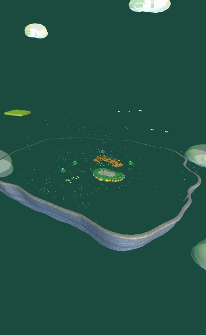
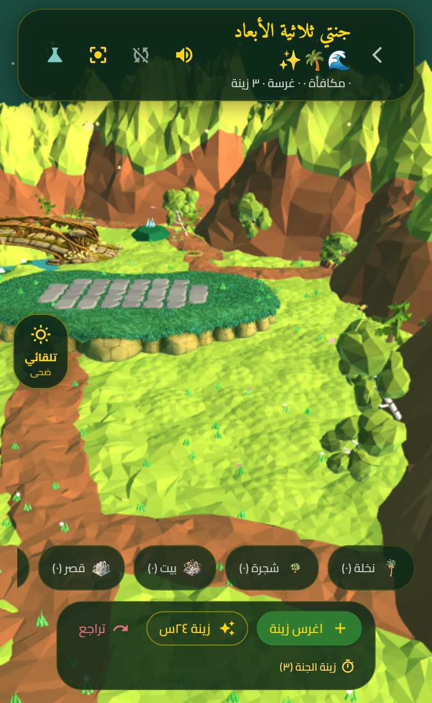
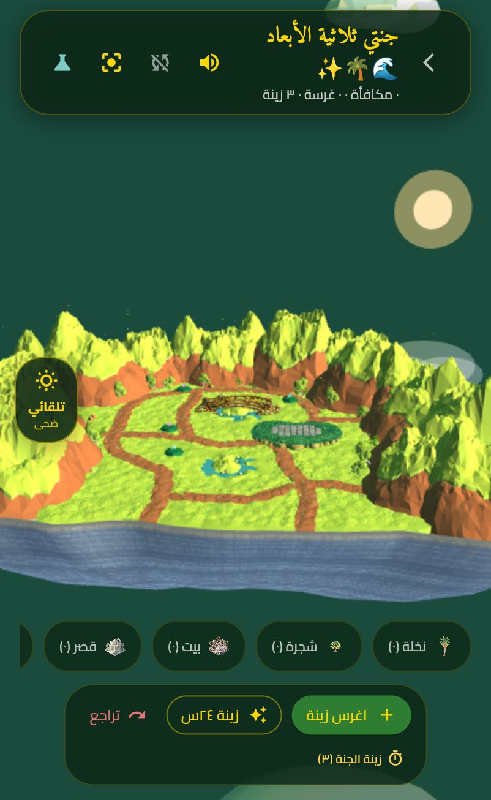
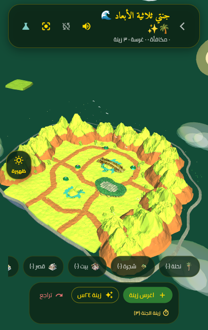
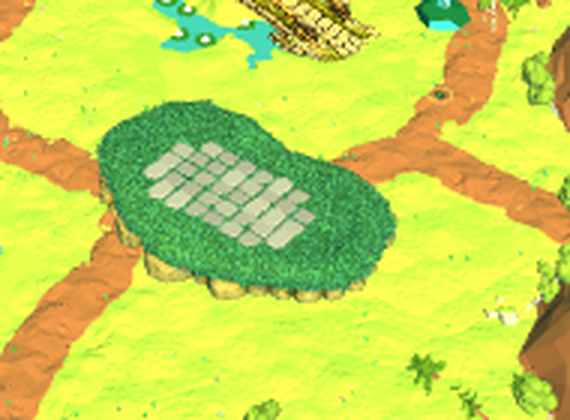
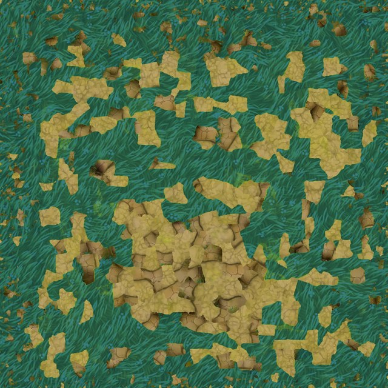

المشهد كان يطلب سبعة عشر موديلًا من assets/3d/nature/، والمجلد
لم يكن مسرودًا في pubspec.yaml إطلاقًا. فكل طلب يرجع ٤٠٤،
وGLTFLoader لا يكمل وعده، فيبقى المشهد عشبًا فارغًا.
الدليل الوحيد كان في كونسول المتصفح — لا شيء في واجهة Flutter:
GET /assets/assets/3d/nature/birch_a.glb → 404 GET /assets/assets/3d/nature/mountain_a.glb → 404 GET /assets/assets/3d/nature/meadow_path.glb → 404 … ١٤ سطرًا أخرى بنفس النتيجة network: 355 طلبًا · 17 منها 404 · 0 خطأ في واجهة Flutter

| ما أُضيف | العدد | الملف |
|---|---|---|
| أسطر الأصول (١٧ GLB + ١٧ صورة جانبية) | ٣٤ | pubspec.yaml |
| مسارات الشبكات في جدول الحزمة | ١٧ | lib/three/asset_map.dart |
| اختبار حراسة جديد | ١ | test/asset_map_test.dart |
الاختبار الجديد «كل شبكة يسردها nature_layout معلنة وموجودة» يمنع تكرار
العطل: أي شبكة تُضاف إلى المشهد ولم تُعلن، يفشل الاختبار قبل أن تصل إلى الشاشة.
kBundledModelAssets
فقط — وهي قائمة موديلات المراتب. مسارات الطبيعة تعيش في nature_layout.dart
المُولَّد، ولم يكن أحد يربط بين الملفين.
console: 🏝 nature 40× assets/3d/nature/meadow_b.glb console: 🏝 nature island ready (245 copies) network: 0 × 404


الكادر القديم (58, 50, 62) → (26, 2, 0) كان مسافته ٨٤٫٧ وحدة، أي
داخل حلقة الجبال (نصف قطرها ~٧٠–٨٠)، وكانت حدود النظر
±78 / ±56 تقطع ربع عرض الجزيرة وثلث عمقها. القيم المطبَّقة الآن:
| العنصر | القيمة المطبَّقة | المعنى |
|---|---|---|
_kHomeX/Y/Z | 150 / 172 / 180 | مسافة ٢٨٩٫٥ وحدة من الهدف |
_kHomeTarget* | 0 / 2 / 0 | مركز الجزيرة لا الهضبة |
| الميل | ٣٦° | البعيد أعلى والقريب أسفل |
| السمت | ٣٩٫٨° عن +z | نفس اتجاه الكادر القديم — بلا دوران يمين/شمال |
| حدود النظر | ±110 / ±95 | تغطي ٢٠٧×١٧٦ كاملة (كانت ±78 / ±56) |
maxDistance | 340 | كان ٢٦٠ |
| الضباب | 400 → 1000 | كان 150 → 460 فيذيب الحافة البعيدة |

المساحة بين الممرات كانت ضيقة، فصُغِّرت المجسّمات حول قاعدتها (عمود الترجمة في المصفوفة لا يُمَس): الجبال ٠٫٨٠، الشجر والصخور ٠٫٨٥. بلاطات المرج والبحيرات بلا تصغير — تصغير البلاطة يفتح فجوة في الأرض لأن المرج مرصوف بها بلا تراكب.
| العنصر | قبل | بعد |
|---|---|---|
| الجسر — الطول | ١٦٫٩ | ١٦٫٩ ثابت (يغطي البحيرة ٣٢ وحدة) |
| الجسر — العرض | ٨٫٩ | ٨٫٠ |
| الجسر — الارتفاع | ١٠٫٢ | ٨٫٨ (المركز y = 1.54) |
جُرِّب في هذه الجلسة استبدال خامة plateau.jpg بخامة المرج
ground_spots مع _tileModelUv(scene, 3.0)، وإضافة
١٠ صخور rock_moss_a/b حول الحدّ. النتيجة على
الشاشة كانت معاكسة: الأطلس الأصلي يحمل عشب السطح وجرفه الصخري معًا،
فاستبداله بخامة واحدة محا الجرف وحوّل الهضبة إلى فطيرة باهتة، والصخور خرجت
بيضاء كحلقة نفايات فوق حدّ يملك صخره أصلًا.
لذلك أُرجعت خامة plateau.jpg كما صُنعت، وحُذف
_tileModelUv و_buildPlateauRocks معًا
(وحُذفت حقول _plateauMat و_moundsTexture التي لم يبقَ
لها قارئ). هندسة plateau.glb ورصفها (٣٦ بلاطة) ومواضع الزرع
لم تُمس.

--release في ٢٠٢٦-١١-١٧.

plateau.jpg ٢٠٤٨×٢٠٤٨: العشب الفيروزي والجرف الرملي في أطلس واحد. لهذا لا تصلح خامة واحدة لكل الهضبة — واستبدالها يمحو نصف الصورة ويفقد الجرف حبّيبه.
test/asset_map_test.dart
تحرس ثلاثة أشياء: أن الموديل ما زال يشير إلى plateau.jpg خارجية بمقاس
٢٠٤٨×٢٠٤٨ (لا صورة مدفونة داخل GLB)، وأن الأطلس مغطّى بمدخل
assets/3d/ في pubspec.yaml، وأن
_tileModelUv و_buildPlateauRocks لا تعودان إلى الشاشة.
أي محاولة لإرجاع تجربة خامة المرج تفشل قبل أن تصل إلى العين.
عند إعادة تحميل الصفحة ظهر الـHUD فوق مشهد أسود، والكونسول:
DartError: Unexpected null value. at get domElement (three_dart_jsm/controls/index.dart) at OrbitControls.new at _Jannati3DScreenState.initPage (jannati_3d_screen.dart)
السبب: OrbitControls يقرأ _globalKey.currentState في
مُنشئه، ومؤقّت الـ١٠٠ms كان يسبق أول إطار في تبويب خلفي (Chrome يؤجّل إطارات
Flutter). الحل: _waitForSceneHost() ينتظر ظهور
DomLikeListenable قبل initScene() — فلا انهيار مهما
تأخر الإطار.
flutter analyze ← No issues foundflutter test ← ٩٧ / ٩٧ — بينها ٣ حراسات هضبة أُضيفت اليوم👆 scene pointer bound · 🏔️ plateau model added · 🌿 ground textures ready · ✅ scene ready (5/5)--release منفصل عن كوميت الميزة8e66e54 — راجع PROJECT.md